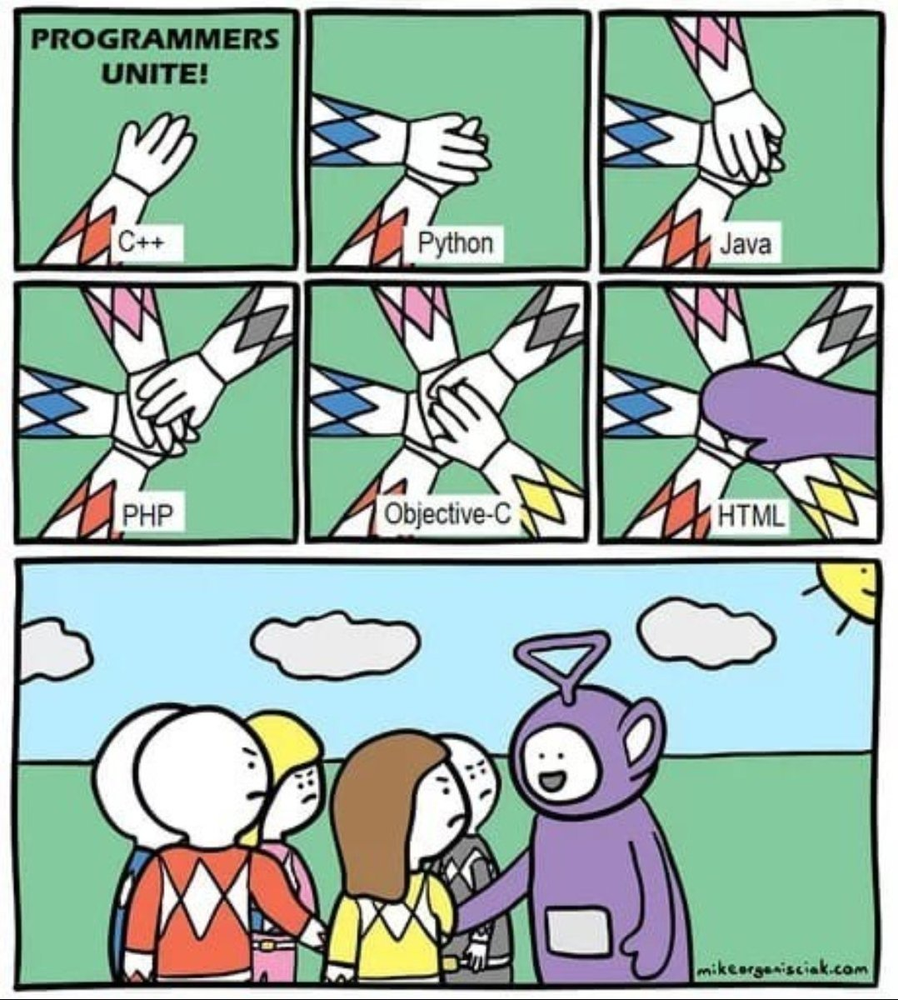
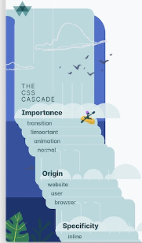
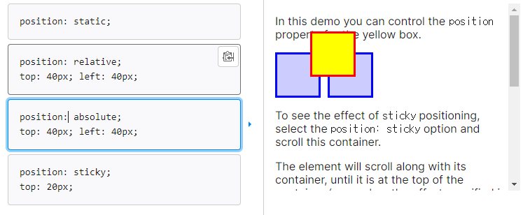
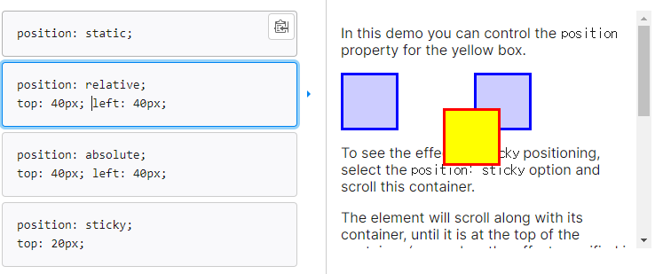

hyper text : '링크'를 통해 다른 문서 혹은 html에 이동할수 있는것
MARKUP, MARKDOWN등에서 보이는 MARK는 태그,속성이라는 의미.
따라서 이들의 본질은 하나하나에 역할(속성)을 부여하는것
하나의 문장을 '요소'라고 한다.
기본적으로 <태그>내용<태그>이며 이 가운데에 태그가 더 들어가거나, 더 많은 속성이 들어간다고해도 문제없이 작동한다.
다만 그안에서는 부모와 자식같으로 상속이 되기때문에 해당 문법이 자신이 사용하고자 하는게 맞는지 고려해서 넣는다.
한 요소의 구조는 <태그명 속성명="속성값">단순 텍스트
요소는 인라인과 블록으로 이루어져있는데, 인라인은 필요한 공간만, 블록은 하나의 그룹의 공간을 가진다.
원래는 div 태그로만 구간을 나누다가, 이후에 시맨틱태그에 넣기 시작했다. 의미없는 div가 아닌 의미를 가진 시맨틱을 넣는것이다.
보통 header,section,fotter등등 있다.
이전에 파이썬에서 api 자료를 가져오기위해, get메소드를 썻다면 html에서는 form을 사용한다.
CSS란 'cascading' style sheets이다. cascading은 폭포의 의미로, 위에서부터 아래로 진행된다는것.
CSS는 스타일을 지정하기 위한 언어로, 선택하고 스타일을 지정한다.
그렇기에 선택할 '선택자' 가 필요하며 해당 속성에 대해 지정하는 속성:값이 필요하다
인라인과 내부참조, 외부참조 3가지의 정의 방법이 있는데
인라인은 1개의 요소에 대해, 내부참조는 하나의 클래스에 대해, 외부참조는 css파일을 만들어서 불러들이는 방법이다.
특히 외부참조는 만들어두고 link태그를 이용해서 불러온다. link:css 를 쳐서 빠르게 포맷을 불러올 수 있다.
전체선택자 *은 '모든'을 의미한다.
요소선택자는 태그를 선택하는것이다. 보통 기존에 있는 태그를 선택하는것
클래스 선택자는 별도의 클래스를 선택하는것이다. 이것은 속성으로 주어지는 class들 대한 선택이다. 문법은 .class
id 선택자는 별도의 id를 선택하는것이다. 이것은 속성으로 주어지는 id에 대한 선택이다. 문법은 #id
위 둘 클래스와 id의 차이점은 여러개와 한개의 차이이다. 클래스는 여러개, id는 한개만 쓴다. 이는 약속된 문법이다(사용은 가능하다는뜻)
결합자는 특정 태그 클래스 id보다는 서로간의 상속에 대하여 자식,자손,형제등의 개념으로 인접한것에 대한 선택을 하는 방식이다.
Html의 모든 요소는 블럭으로 이루어져있다. 실제 내용이 있는 영역+여백 공간이 있는것이다.
여기에서 display 속성이 inline라면 줄바꿈이 일어나지 않고, 특정 속성을 지정할 수 없다. 즉 inline은 단순 데이터 영역만을 가진다.
그것과 다른 block 속성은 자동으로 줄바꿈(boder)이 되며 전체 가로폭을 차지한다. 따라서 block은 데이터영역+여백을 가진다
대표적으로 많이 쓰이는 block은 h,div,p등이며 inline은 span,input 등이다.
간단한 구분법으로는 태그를 여러개 사용되었을때 가로에 여러개가 쓰일수 있는가, 없는가이다.
추가로 inline-block이 존재하는데 이것은 내부적으로는 block이지만, 외부적으로는 inline같이 보이는것이다.
이를 통해 기존 특정속성을 사용할수없는 inline과 달리 특정속성을 사용할 수 있게된다.
요소의 위치를 지정하는것이다. 왜냐면 모든 요소의 position은 static, 좌측상단부터 쌓여가는데 특정 위치로 조절하는것이 필요하기 때문이다.
이러한 static인 기본값을 강제로 바꿔주는 4가지가 있다
absolute : 실제하는 영역을 차지하지 않고 위치를 이동한다. 절대 위치로 static이 아닌 가까운 부모의 기준으로 이동한다. 만약 모든 부모가 static이 아니라면 전체 웹페이지 기준으로 이동한다.
따라서 absolote사용시에 어떤 기준 위치인지, 한번더 확인하자
relative : 실제하는 영역을 차지한 채로 위치를 이동한다. 부모의 기준 상대위치로 이동한다. 부모가 static 이여도 부모기준으로 이동한다
input 태그는 데이터를 받는 태그이다.
이 내부 속성에는 받는 형식을 지정하는 type, name과 value는 딕셔너리형태의 넘겨주는 키,값이다.
블로그보다 신뢰성 좋은 mdn사이트. 번역이 종종 안되어있는게 있음
https://developer.mozilla.org/ko/docs/Web/HTML